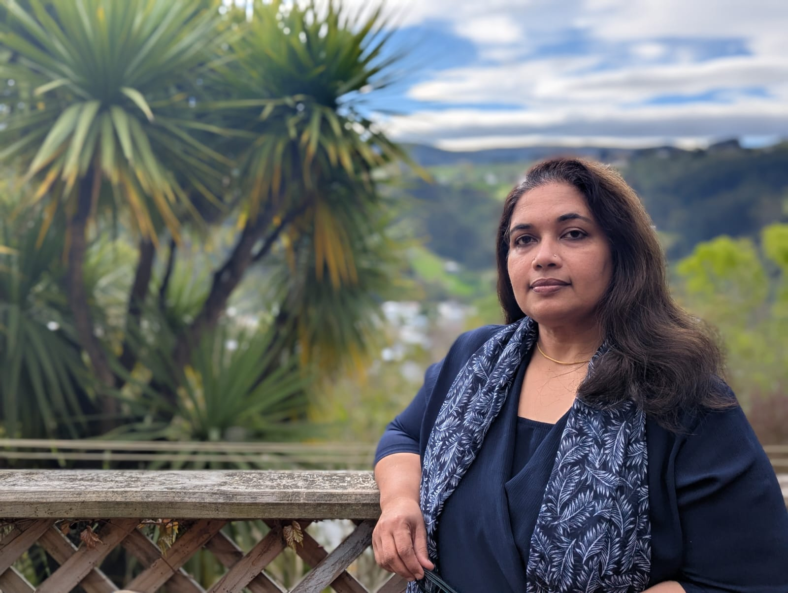
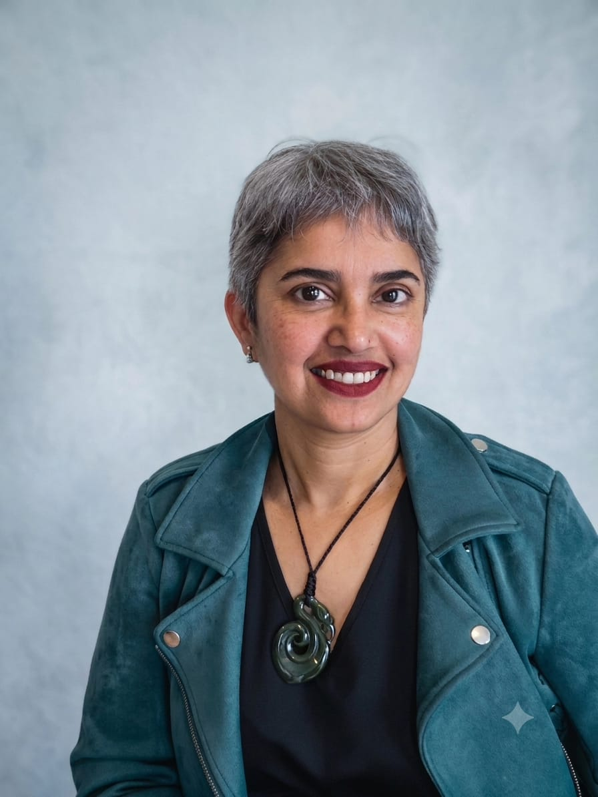

Investigations led by Sreevidya Varma. Systems led by Kavita Khanna.

Sreevidya Varma
Sreevidya has conducted more than 300 workplace investigations, PoSH, GRC, misconduct, and conduct matters, for over 50 distinct organisations since beginning her India practice in 2014. Her work spans the full range of workplace contexts: IT and ITES, automobile, FMCG, aerospace, BPO, education, and unionised environments. Some of those client relationships have been continuous for more than a decade.
She is an Association of Workplace Investigators Certificate Holder (AWI-CH) awi.org ↗, the internationally recognised benchmark for workplace investigation competence. Her practice is built on procedural rigour, evidentiary defensibility, and trauma-aware methodology, applied across PoSH Act and GRC proceedings in India and employment investigations in New Zealand.
Sreevidya has maintained active India client relationships through remote delivery, including for large enterprise organisations through 2025. She relocated to New Zealand in 2023 and leads WORQsense's New Zealand practice alongside her India work. She is also an AMINZ-credentialled mediator, bringing certified conciliation capability where that process is appropriate.
LinkedIn ↗
Kavita Khanna
Kavita Khanna has spent 25 years working with executive teams and boards across India, Australia, and New Zealand, in engineering, infrastructure, design, technology, and professional services. Her experience spans early-stage ventures to large, multi-layered enterprises navigating transformation.
She is widely regarded for expertise in practical recovery following high-risk incidents. Organisations also engage her for system checks and diagnostics for risk assurance, identifying structural vulnerability before a formal complaint is raised. Her work blends strategic foresight, operational depth, and cultural fluency.
Within WORQsense, Kavita leads ReWireWorks, the prevention and diagnostics practice that begins where investigation findings end: turning what the inquiry reveals about structural, cultural, and leadership conditions into the specific changes that reduce recurrence.
LinkedIn ↗Investigations-first. Systems-intelligent.
Most investigation practices stop at the finding. Most systems practices do not touch the investigative record. WORQsense holds both disciplines, not because it is comprehensive, but because the work demands it.
Proven to standard.
The investigation establishes what happened, to what standard of proof, and with what procedural integrity. Findings tied to evidence. Inferences documented. Credibility assessed without bias. Built to survive challenge.
- AWI-CH standard on every inquiry
- PEACE model, Méndez Principles, TILES System®
- Trauma-aware, defensible process
- Court and board-grade findings
The conditions behind it.
ReWireWorks reads what the investigation reveals about structural, cultural, and leadership conditions. Prevention built from what the inquiry actually found, not a diagnostic added after the fact.
- Systems signals section in every investigation report
- Post-investigation structural redesign
- Psychosocial safety, culture diagnostics, team resets
- Leadership alignment and structural change
Four commitments. Every engagement.
Defensible
Every investigation is built to withstand challenge in court, on appeal, and under procedural review. Investigative rigour is the floor, not the ceiling.
Independent
True independence means no advisory role, no prior relationship, no conflicting position. Being willing to find what the evidence requires, including findings that are unwelcome.
Trauma-aware
Investigative practice that does not account for the impact of trauma on memory, disclosure, and credibility produces unreliable evidence and harms participants. It is also procedurally inadequate.
Precise
Clear language, honest scope, proportionate conclusions. No inflated findings, no hedged non-findings, no recommendations that exceed what the evidence supports.
Every engagement starts with a conversation.
Independent investigation, capability training, or systems work, tell us what the situation calls for.